전자계산기기능사 (2008-10-05 기출문제)
1과목: 전기전자공학
1. A급 트랜지스터에서 전력 증폭 회로의 최대효율은 몇 %인가?
- 25%
- 50%
- 78.5%
- 100%
(정답률: 49%)

2. 다음과 같은 연산증폭기회로에서 입.출력 전압의 관계로 가장 적합한 것은?(단, R1=R2=R3=R4 이다)
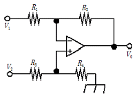
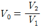
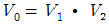
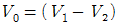
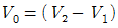
(정답률: 38%)
3. 궤환이 없을때 증폭도가 100인 증폭회로에 궤환율 β=0.01의 부궤환을 걸었을 때 증폭도는 얼마인가?
- 1
- 5
- 10
- 50
(정답률: 42%)
4. 다음중 컬렉터 접지 증폭회로에 대한 설명으로 적합하지 않은것은?
- 입력 임피던스가 크다.
- 버퍼용으로 많이 사용된다.
- 전류 증폭률이 1보다 작다.
- 입.출력 전압의 위상은 동위상이다.
(정답률: 39%)
5. FM변조에서 신호주파수가 4KHz이고 최대 주파수 편이가 16KHz일때 변조지수는 얼마인가?
- 1
- 3
- 4
- 5
(정답률: 82%)
6. 실효값이 200V, 주파수가 60Hz인 교류전압의 순시값을 나타내는 식으로 적당한 것은?
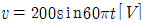
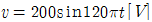
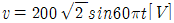
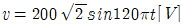
(정답률: 35%)
7. 다음 ( )안에 들어갈 내용으로 가장 적합한 것은?
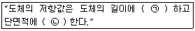
- (ㄱ) 비례 (ㄴ) 비례
- (ㄱ) 비례 (ㄴ) 반비례
- (ㄱ) 반비례 (ㄴ) 비례
- (ㄱ) 반비례 (ㄴ) 반비례
(정답률: 78%)
8. 다음중 반도체의 재료로 사용되는 대표적인 원소는?
- He
- Fe
- Cr
- Si
(정답률: 79%)
9. 저항 20Ω과 60Ω의 병렬 회로에서 60Ω의 저항에 3A의 전류가 흐른다면 20Ω에 흐르는 전류는 몇 A인가?
- 1A
- 3A
- 6A
- 9A
(정답률: 42%)
10. 다음중 수정발진회로의 발진주파수가 안정된 이유로 가장 적합한 것은?
- 수정 발진기는 출력이 적기 때문이다.
- 수정 진동자는 Q가 매우 높기 때문이다.
- 수정 발진기에는 피에조 전기효과가 있기 때문이다.
- 수정 진동자의 진동수는 전원전압과 관계가 없기 때문이다.
(정답률: 53%)
2과목: 전자계산기구조
11. 다음중 입.출력 제어방식에 해당하지 않는것은?
- DMA 방식
- 인터페이스 방식
- 채널에 의한 방식
- 중앙처리장치에 의한 방식
(정답률: 47%)
12. 2진수 1111을 그레이코드로 변환하면?
- 0000
- 1000
- 1010
- 1111
(정답률: 75%)
13. 기억장치의 정보를 중앙처리장치로 가져오는 기능을 하는 연산자는?
- Load
- Add
- Shift
- Store
(정답률: 66%)
14. 입.출력장치의 동작속도와 컴퓨터 내부의 동작속도를 맞추는데 사용되는 레지스터는?
- 어드레스 레지스터
- 시퀀스 레지스터
- 버퍼 레지스터
- 시프트 레지스터
(정답률: 73%)
15. 중앙처리장치의 기능이라고 할 수 없는것은?
- 처리기능의 제어
- 정보의 연산
- 정보의 기억
- Operator와의 대화
(정답률: 69%)
16. 하나의 사무실 또는 빌딩과 같이 근거리에 인접한 컴퓨터 시스템을 함께 연결하는 통신망은?
- LAN
- MAN
- WAN
- VAN
(정답률: 82%)
17. 다음중 중앙처리장치와 입.출력장치 사이에 데이터 전송이 원활하게 이루어 지도록 하는 중계 회로는?
- 입.출력 버스
- 입.출력 교환기
- 입.출력 제어기
- 입.출력 인터페이스
(정답률: 44%)
18. 다음 기억장치중 직접 접근 기억장치가 아닌것은?
- 자기 드럼
- 데이터 셀
- 자기 디스크
- 자기 테이프
(정답률: 64%)
19. 번지부에 표현된 값이 실제 데이터가 기억된 번지가 아니고 유효번지(실제 데이터의 번지)를 나타내는 번지 지정 형식은?
- 직접 번지 형식
- 간접 번지 형식
- 상대 번지 형식
- 직접 데이터 형식
(정답률: 61%)
20. 다음 그림과 같이 중심 노드를 경유하여 다른 노드와 연결하는 방식으로 전화망 등에 사용되는 통신망은?
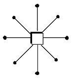
- 성형 통신망(star network)
- 루프형 통신방(loop network)
- 그물형 통신망(mesh network)
- 계층형 통신망(hierarchical network)
(정답률: 74%)
21. 다음중 단항연산은?
- OR
- AND
- EX-OR
- MOVE
(정답률: 61%)
22. 자기디스크에서 기록 표면에 동심원을 이루고 있는 원형의 기록 위치를 트랙이라고 하는데 이 트랙의 모임을 무엇이라고 하는가?
- field
- record
- cylinder
- access arm
(정답률: 58%)
23. 다음중 충격식 프린터는?
- 잉크젯 프린터
- 레이저 프린터
- 열전사 프린터
- 도트 매트릭스 프린터
(정답률: 61%)
24. 0 과 1 로 구성되고 정보를 나타내는 최소단위를 무엇이라 하는가?
- bit
- word
- byte
- file
(정답률: 87%)
25. 연산에 사용될 데이터나 연산의 중간 결과를 저장하는데 사용되는 레지스터는?
- 누산기
- 프로그램 카운터
- 명령 레지스터
- 메모리 버퍼 레지스터
(정답률: 76%)
26. 다음 컴퓨터의 분류중 데이터 표현에 따른 분류와 거리가 먼것은?
- 아날로그 컴퓨터
- 디지털 컴퓨터
- 하이브리드 컴퓨터
- 전용 컴퓨터
(정답률: 60%)
27. 다음 연산자의 수행결과는?
- 1110 1001
- 1110 1111
- 0000 1001
- 1111 0110
(정답률: 81%)
28. 일단 사용하고 남은 기억공간을 모아서 유용하고 능률적으로 사용하도록 하는 방법은?
- garbage collection
- memory collection
- multiprogramming
- relocation
(정답률: 49%)
29. 명령어의 번지와 프로그램 카운터가 더해져서 유효한 번지를 결정하는 방식은?
- 상대번지 모드(Relative addressing mode)
- 간접번지 모드(Indirect addressing mode)
- 인덱스드 어드레싱 모드(Indexed addressing mode)
- 레지스터 어드레싱 모드(Register addressing mode)
(정답률: 52%)
30. 연산기의 입력 자료를 그대로 출력하는 것으로 컴퓨터 내부에 있는 하나의 레지스터에 기억된 자료를 다른 레지스터로 옮길때 이용되는 논리연산은?
- MOVE 연산
- AND 연산
- OR 연산
- UNARY 연산
(정답률: 78%)
3과목: 프로그래밍일반
31. 운영체제의 종류에 해당하지 않는것은?
- UNIX
- LINUX
- Windows NT
- Visual Studio
(정답률: 70%)
32. 기계어에 대한 설명을 옳지 않은것은?
- 2진수 0과1을 사용하여 명령어와 데이터를 나타낸다.
- 컴퓨터가 직접 이해할 수 있어 속도가 빠르다.
- 기계어 구조는 컴퓨터 마다 동일하여 호환성이 높다
- 전문적인 지식이 없으면 이해하기 힘들다.
(정답률: 68%)
33. 시스템 프로그래밍 언어로 적당한 것은?
- COBOL
- C
- BASIC
- FORTRAN
(정답률: 86%)
34. 언어번역 프로그램에 해당하지 않는것은?
- 인터프리터
- 로더
- 컴파일러
- 어셈블러
(정답률: 79%)
35. C 언어에서 사용되는 이스케이프 시퀀스(Wscape Sequence) 에 대한 설명으로 옳지 않은 것은?
- \r : carriage return
- \t : tab
- \b : backspace
- \n : null character
(정답률: 50%)
36. 운영체제의 기능으로 옳지 않은 것은?
- 원시 프로그램을 목적 프로그램으로 변환하는 기능을 제공한다.
- 사용자와 시스템간의 편리한 인터페이스를 제공한다.
- 데이터 및 자원의 공유 기능을 제공한다.
- 자원 보호 기능을 제공한다.
(정답률: 73%)
37. 운영체제의 성능 평가 기준으로 거리가 먼것은?
- 처리능력
- 응답시간
- 신뢰도
- 비용
(정답률: 87%)
38. 프로그램 개발시 문서화의 효과로 거리가 먼것은?
- 프로그램 개발 후 시스템의 유지보수가 용이하다.
- 프로그램 개발팀에서 운용팀으로 인수 인계를 쉽게 할 수 있다.
- 원시 프로그램에 대한 번역과정 없이 프로그램을 실행 할 수 있다.
- 프로그램 개발 목적 및 과정을 표준화 하여 효율적인 작업이 되도록 한다.
(정답률: 70%)
39. 다음 설명에 해당하는 것은?
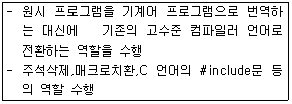
- Decoder
- Translator
- Cross Compiler
- Preprocessor
(정답률: 47%)
40. 객체지향 기법에서 하나 이상의 유사한 객체들을 묶어서 하나의 공통된 특성을 표현한 것을 무엇이라 하는가?
- 메시지
- 메소드
- 속성
- 클래스
(정답률: 62%)
4과목: 디지털공학
41. 다음 회로의 구성 특징이 다른것은?
- 계수기
- 인코더
- 반가산기
- 멀티플렉서
(정답률: 47%)
42. 인버터 회로라고 부르는 회로는?
- 부정(NOT) 회로
- 논리합(OR) 회로
- 논리곱(AND) 회로
- 배타적(EX-OR) 회로
(정답률: 62%)
43. 다음중 3 초과 코드에서 사용하지 않는 것은?
- 0000
- 1010
- 0100
- 1001
(정답률: 68%)
44. 디지털 신호를 아날로그 신호로 바꾸는 것을 무엇이라고 하는가?
- A/D 변환기
- D/A 변환기
- 해독기(Decoder)
- 비교회로
(정답률: 87%)
45. 10진수 12를 2진수로 고쳤을때 2의 보수는?
- 1100
- 0011
- 0100
- 1011
(정답률: 61%)
46. 다음중 드모르간 정리가 옳은것은?
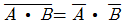
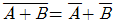
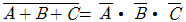
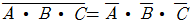
(정답률: 70%)
47. 다음중 16진수에서 사용되는 것이 아닌것은?
- 9
- C
- 1
- G
(정답률: 77%)
48. 비가중치 코드가 아닌것은?
- 그레이 코드
- 3-초과 코드
- BCD 코드
- 시프트 카운터 코드
(정답률: 30%)
49. 다음중 플립플로과 같은 동작을 하는 회로는?
- 단안정 멀티바이브레이터 회로
- 비안정 멀티바이브레이터 회로
- 쌍안정 멀티바이브레이터 회로
- 시미트 트리거 회로
(정답률: 72%)
50. 10진수를 BCD코드로 변환하는것을 무엇이라 하는가?
- 디코더
- 인코더
- A/D 변환기
- 감산기
(정답률: 56%)
51. JK 플립플롭에서 Qn 이 RESET 상태일때 J=0,K=1 입력신호를 인가하면 출력 Qn+1 의 상태는?
- 0
- 1
- 부정
- 입력금지
(정답률: 52%)
52. 다음 그림과 같은 플립플롭의 명칭은?
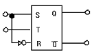
- RS
- T
- D
- JK
(정답률: 51%)
53. 다음 그림은 반감산기의 논리회로이다. 빌림 수를 출력하는 단자는?
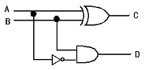
- A
- B
- C
- D
(정답률: 48%)
54. 다음중 반가산기의 출력중 합의 논리식은?
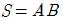
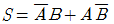
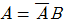
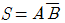
(정답률: 71%)
55. T 플립플롭의 진리표이다. 출력을 논리식으로 나타내면 어떻게 되는가?
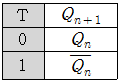
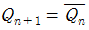
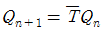
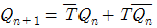
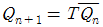
(정답률: 40%)
56. 대응되는 변수의 내용이 서로 다르면 결과가 “1” 이고 대응되는 내용이 같으면 결과가 “0”이 되는 불대수의 연산은?
- 논리합(OR)
- 논리곱(AND)
- 논리 부정(NOT)
- 배타적 논리합(EX-OR)
(정답률: 69%)
57. 다음중 입력 전부가 “0” 이어야만 출력이 “1”이 나오는 게이트는?
- OR
- AND
- NOR
- NAND
(정답률: 54%)
58. (A+B)(A+C)를 최소화 하면?
- A+B+C
- A+BC
- B+AC
- AB+C
(정답률: 82%)
59. 다음중 BCD 코드에서 사용되지 않는 표현은?
- 1001
- 0101
- 0110
- 1010
(정답률: 49%)
60. 다음중 조합논리회로 설계시 가장 먼저 해야 할 일은?
- 진리표작성
- 논리회로의 구현
- 주어진 문제의 분석과 변수의 정리
- 각 출력에 대한 불 함수의 유도 및 간소화
(정답률: 52%)